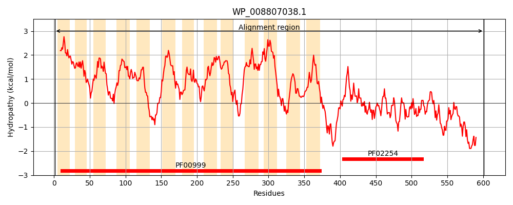
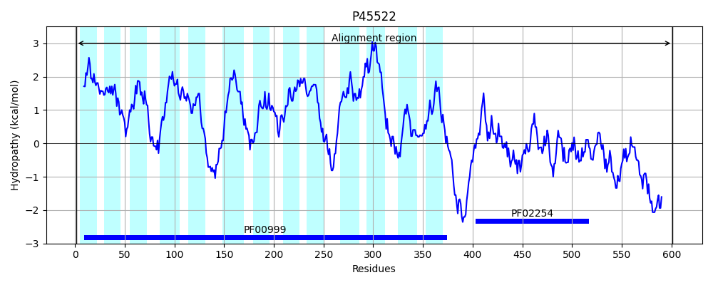
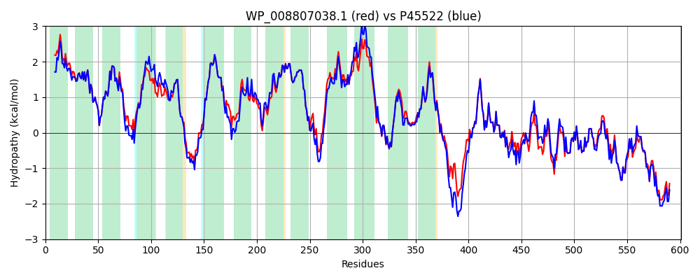

Hit Accession: P45522
Hit TCID: 2.A.37.1.2
Hit Description: gnl|BL_ORD_ID|10572 gnl|TC-DB|P45522|2.A.37.1.2 Glutathione-regulated potassium-efflux system protein kefB OS=Escherichia coli (strain K12) GN=kefB PE=1 SV=1
Mach Len: 601
e:0.000000
Query TMS Count : 13
Hit TMS Count: 13
TMS-Overlap Score: 12.100000
Predicted Substrates:CHEBI:8345;potassium(1+)
BLAST Alignment:
Score: 2716 , Bit scores: 1050 bits, E-value: 0.0e+00, Alignment length: 601, Percentage identity: 90
Query: 1 MAGSDLLLAGVLFLFAAVIAVPLASRLGIGAVLGYLLAGIAIGPWGLGFISDVDEILHFSELGVVFLMFIIGLELNPAKLWRLRSSIFGVGAAQVMLSAAILGGLLMTTGFSWQAAVVGGIGLAMSSTAMALQLMREKGMSRSESGQLGFSVLLFQDLAVIPALALVPLLAGSADEHVNWLTVGMKVLAFAGMLIGGRYLLRPVFRFIASSGVREVFTAATLLLVLGSALFMEALGLSMALGTFIAGVLLAESEYRHELEIAIDPFKGLLLGLFFISVGMALNLGVLYTHLLWVAVSVAVLVAVKMLVLYLLARLYGLRSSERMQFAGVLSQGGEFAFVLFSLPASQRLFQHDQMALLLVAVTLSMMTTPLLMKGIDKLLSRRLNPADDTDEAPWVEDDKPQVIIVGFGRFGQVIGRLLMANKMRITVLERDISAVNLMRNYGYKVYFGDATQLELLRSAGAEEAQSIVITCNEPEDTMRLVEMCQQHFPHLHILARARGRVEAHELLQAGVTQFSRETFSSALELGRKALITLGMHPHQAQRAQLHFRRLDMRMLRELMPVHTDTVQVSRVREARRELEEIFQREMQKESRQLDGWDEFE 601
M GSD LLAGVLFLFAAV AVPLASRLGIGAVLGYLLAGIAIGPWGLGFISDVDEILHFSELGVVFLMFIIGLELNP+KLW+LR SIFGVGAAQV+LSAA+L GLLM T F+WQAAVVGGIGLAMSSTAMALQLMREKGM+RSESGQLGFSVLLFQDLAVIPALALVPLLAGSADEH +W+ VGMKVLAF GMLIGGRYLLRPVFRFIA+SGVREVFTAATLLLVLGSALFM+ALGLSMALGTFIAGVLLAESEYRHELE AIDPFKGLLLGLFFISVGM+LNLGVLYTHLLWV +SV VLVAVK+LVLYLLARLYG+RSSERMQFAGVLSQGGEFAFVLFS +SQRLFQ DQMALLLV VTLSMMTTPLLMK +DK LSR+ N ++ DE PWV DDKPQVI+VGFGRFGQVIGRLLMANKMRITVLERDISAVNLMR YGYKVY+GDATQ++LLRSAGAE A+SIVITCNEPEDTM+LVE+CQQHFPHLHILARARGRVEAHELLQAGVTQFSRETFSSALELGRK L+TLGMHPHQAQRAQLHFRRLDMRMLREL+P+H DTVQ+SR REARRELEEIFQREMQ+E RQLDGWDEFE
Sbjct: 1 MEGSDFLLAGVLFLFAAVAAVPLASRLGIGAVLGYLLAGIAIGPWGLGFISDVDEILHFSELGVVFLMFIIGLELNPSKLWQLRRSIFGVGAAQVLLSAALLAGLLMLTDFAWQAAVVGGIGLAMSSTAMALQLMREKGMNRSESGQLGFSVLLFQDLAVIPALALVPLLAGSADEHFDWMKVGMKVLAFVGMLIGGRYLLRPVFRFIAASGVREVFTAATLLLVLGSALFMDALGLSMALGTFIAGVLLAESEYRHELETAIDPFKGLLLGLFFISVGMSLNLGVLYTHLLWVVISVVVLVAVKILVLYLLARLYGVRSSERMQFAGVLSQGGEFAFVLFSTASSQRLFQGDQMALLLVTVTLSMMTTPLLMKLVDKWLSRQFNGPEEEDEKPWVNDDKPQVIVVGFGRFGQVIGRLLMANKMRITVLERDISAVNLMRKYGYKVYYGDATQVDLLRSAGAEAAESIVITCNEPEDTMKLVEICQQHFPHLHILARARGRVEAHELLQAGVTQFSRETFSSALELGRKTLVTLGMHPHQAQRAQLHFRRLDMRMLRELIPMHADTVQISRAREARRELEEIFQREMQQERRQLDGWDEFE 601 | Protein Hydropathy Plots: |
|---|
|  |  |
Pairwise Alignment-Hydropathy Plot:
|
|---|
|  |